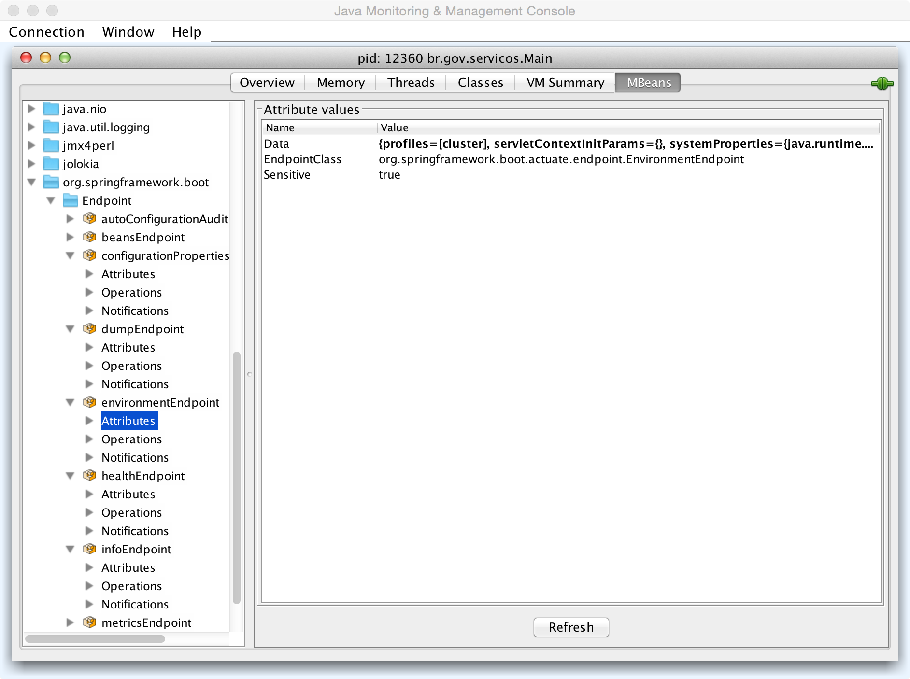

- Introdução
- 1. Sobre este documento
- 2. Princípios
- 3. Sobre o projeto
- 4. Serviços
- 5. Métricas
- 6. Metodologia de desenvolvimento
- 7. Design
-
8.
Desenvolvimento
- 8.1. Arquitetura
- 8.2. Ferramentas utilizadas
- 8.3. Infraestrutura
- 8.4. Dados Criptografados
- 8.5. Implantação e execução
- 8.6. Configuração
- 8.7. Testes
- 8.8. Entrega Contínua
- 8.9. ElasticSearch
-
8.10.
Requisitos Transversais
- 8.10.1. Acessibilidade
- 8.10.2. Auditabilidade
- 8.10.3. Backups
- 8.10.4. Compatibilidade de plataformas
- 8.10.5. Dependências de terceiros
- 8.10.6. Disponibilidade
- 8.10.7. Documentação
- 8.10.8. Escalabilidade
- 8.10.9. Monitoramento
- 8.10.10. Performance
- 8.10.11. Privacidade
- 8.10.12. Segurança
- 8.10.13. Usabilidade
- 9. Extras
- Publicado com GitBook
Documento de Implantação
Neste documento estão todas as informações necessárias à implantação e operação do Guia de Serviços em ambientes similares a produção.
Visão da infraestrutura
Ambiente de produção
Este ambiente contém 5 máquinas virtuais:
- Balanceador de carga
- Servidor de Aplicação 1 (Azul)
- Servidor de Aplicação 2 (Verde)
- Servidor de Busca 1
- Servidor de Busca 2
| VM | OS | Versão | Arquitetura | Cores | Memória | Disco | Portas |
|---|---|---|---|---|---|---|---|
| Balanceador | CentOS | 7 | 64bit | 4 | 4 GB | 100+ GB | 22, 80 |
| Aplicação 1 | CentOS | 7 | 64bit | 4 | 4 GB | 100+ GB | 22, 8080 |
| Aplicação 2 | CentOS | 7 | 64bit | 4 | 4 GB | 100+ GB | 22, 8080 |
| Busca 1 | CentOS | 7 | 64bit | 4 | 4 GB | 100+ GB | 22, 9200, 9300 |
| Busca 2 | CentOS | 7 | 64bit | 4 | 4 GB | 100+ GB | 22, 9200, 9300 |
Balanceador de Carga
CentOS 7, 64 bits, com 4 cores, 4gb de RAM e 100+ GB de disco. Roda um servidor HAProxy na porta 80, e um servidor ssh na porta 22.
Servidores de Aplicação
CentOS 7, 64 bits, com 4 cores, 4gb de RAM e 100+ GB de disco. Roda a aplicação sob a Java Virtual Machine versão 1.8.0_40 ou superior, na porta 8080, e um servidor ssh na porta 22.
Servidores de Busca
CentOS 7, 64 bits, com 4 cores, 4gb de RAM e 100+ GB de disco. Roda o ElasticSearch sob a Java Virtual Machine versão 1.8.0_40 ou superior, nas portas 9200 e 9300, e um servidor ssh na porta 22.
Repositório Yum
Os pacotes RPM do Guia de Serviços estão disponíveis em um repositório Yum, com as seguintes configurações:
[guia-de-servicos]
name = Guia de Serviços
baseurl = https://s3-sa-east-1.amazonaws.com/servicosgovbr/centos/7/
enabled=1
gpgcheck=1
gpgkey=https://raw.githubusercontent.com/servicosgovbr/guia-de-servicos/master/src/main/resources/static/GPG-KEY
Um arquivo com estes conteúdos pode ser adicionado ao diretório /etc/yum.repos.d, seguido do comando sudo yum makecache fast -y, para que o Yum atualize as definições internas de listas de pacotes disponíveis.
A chave GPG utilizada para assinar os pacotes e o repositório é:
pub 2048R/2E1F2BA2 2015-04-07
Key fingerprint = 1F90 DD30 DAF2 DCDF 4F27 DC78 F68F 9EB4 2E1F 2BA2
uid Guia de Serviços <gpg@servicos.gov.br>
sub 2048R/BA141101 2015-04-07
E seu conteúdo (também disponível atraves da URL na seção gpgkey da configuração acima) é:
-----BEGIN PGP PUBLIC KEY BLOCK-----
Version: GnuPG/MacGPG2 v2.0.22 (Darwin)
mQENBFUj7DsBCAC8sotytVL/ZTAqCI4gZGIVcogVXo1AsjySXTR9mVAEet3EElDM
dIs2WaD/oLUFqG2TtSDLd3RhrufIHpe4t4pISKoHE8jaHecQR8q9y9Fbyjd5swba
DIrulD8/b/qNIXr21PRjoJ1II5KxkKvA3Ax8RUui8f7fGg3SY3slfPqKfp81K6gM
+LoISVOhvxgiPDj5AtZUtarFdsGs1ssCcYD8axOgU9lEj2JZxO5ntUff+L9l8Ftg
Fi7i4pwdsz6RwZTr551qtrZc2gXesnCgJBl5y45AaIlIeRfZ5xpIz/7mQFqf5Vl8
FYdxF2WNslyTkpZBgSdPIA9mFEEK77YWtKP5ABEBAAG0J0d1aWEgZGUgU2VydmnD
p29zIDxncGdAc2Vydmljb3MuZ292LmJyPokBOAQTAQIAIgUCVSPsOwIbAwYLCQgH
AwIGFQgCCQoLBBYCAwECHgECF4AACgkQ9o+etC4fK6IJEAf9GvYWYq8XbjQEcThO
5Yf4gm1OaISd2mt6TD0BABz6fLi23454RmM9hoGThb/IPfabHH0ZKq0YFEqA3cwI
UlzoT4VycYoZSr1EMxiJsAWyf6n/y5Gt9fwnuRKBOeLnPd5gdK5+ukWlc89U08F4
oCTrpqif/9eOw0tDeHD15rbNR4DZk8CYquT05RpMdJ0EMpYg6GYwffH8NEFg/bRZ
R9w7TdyHVB6BFqNuVmxn/Scg2W/Vwb5rk1P0GMOIawUBrLE82pZGuEyD9I8g5L6u
CbPmJ97HimGYBlgptkzImc2viCi/KfFSmlrNvWOnDkviHmyME5TzhAZd4Wunnwo6
wN5mvLkBDQRVI+w7AQgA1U/T1BhDlinoc1Vsm5RyqaoPwnl7U/V1ieJ9IPC76Q6Q
pOLca2LN9IQldWRfB3mN7lG+ioxbXIx110A4AHugPLO9eUtj5LqoHk6pgia5YcM/
qsE24NwKjEmLHokOrVUqawVgEEFJR+udWBeBY7xL0wD/ZQIKbDKL/avf39z2vHfd
egqm46l8DkFjeRZueceLD/N2XFOuw8DHulb+7Rs7mako4kdXmyE3T/bxo7zBuybr
W0gpKwI0e+kBL6q4m1I472jUQY6hvmjsj8J0D9g5PIMXwtpMSQVFlMWSxP8+KrgV
2w8ug03BpDk/d5G+sWUiVPpVDVfSaA2nxTWL9i5NWQARAQABiQEfBBgBAgAJBQJV
I+w7AhsMAAoJEPaPnrQuHyui81UH/1iww/lx6UhB2rioLu5S9hIdZk+B3uuLFI/+
lIBh+tp9SgYmVbbD9re649wiCUzvyup9zWbwwq1/yC403ooDOFhQ1685ZKtMHDHV
37GQktbJcADd8feor60/lmJVfll8zarOQRn4EGY9laZK46lGB6GdFrpkvzifyNDF
U+m7ZteaJOBqv0l+iwnoSS/wIcQI8ISX1KRCDmR2dxFO1Gnx53S1+yIryL2fINZn
zAQfjQCD/hjXQHUk5o2rMKlMUF2iPJwlx139wJ/o5BtvKXg/1oGBruMa8dVGGy4+
FWNjBIi/4Zz3o/QwwjUGKeAYRpllp8knOk+6foxRzuYIkov92Lg=
=vCrJ
-----END PGP PUBLIC KEY BLOCK-----
Homologação e Produção
Ambientes gerenciados pelo Governo Federal (de acordo com a infraestrutura) têm a aplicação e o cluster de ElasticSearch implantados internamente ao Ministério do Planejamento.
Os ambientes possuem configuração similar ao ambiente Vagrant, com a adição de funcionalidades relacionadas a segurança, prevenção a ataques, backup e monitoramento.
Instalação
A instalação dos ambientes é simplificada através dos scripts existentes no diretório scripts/prod-like, residente no repositório no Github:
lb-node-install
Este script deve ser executado, como root, em uma máquina destinada a ser o balanceador de carga. Ele instala, configura e inicia o haproxy de forma a distribuir a carga das requisições externas entre os servidores de aplicação.
São aceitos dois parâmetros em linha de comando, um para cada IP dos servidores de aplicação (caso não informados, são utilizados 10.16.0.13 e 10.16.0.12 por padrão).
Exemplo:
sudo /bin/bash scripts/prod-like/lb-node-install '10.16.0.13' '10.16.0.12'
app-node-install
Este script deve ser executado, como root, em uma máquina destinada a servir a aplicação do Guia de Serviços.
São aceitos dois parâmetros em linha de comando, um para cada IP dos servidores de busca (caso não informados, são utilizados 10.16.0.11 e 10.16.0.9 por padrão).
Este script:
- Configura o [repositório Yum] do Guia de Serviços
- Instala as ferramentas
wgetedeltarpm, caso não existentes no sistema - Instala a JDK 1.8.0_40, caso não existente
- Instala, configura e inicia o daemon do Guia de Serviços (
guia-de-servicos).
Exemplo:
sudo /bin/bash scripts/prod-like/app-node-install '10.16.0.11' '10.16.0.9'
es-node-install
Este script deve ser executado, como root, em uma máquina destinada a servir o motor de busca do Guia de Serviços, ElasticSearch.
São aceitos dois parâmetros em linha de comando, um para cada IP dos servidores de busca (caso não informados, são utilizados 10.16.0.11 e 10.16.0.9 por padrão).
Este script:
- Configura o repositório Yum do ElasticSearch
- Instala as ferramentas
wgetedeltarpm, caso não existentes no sistema - Instala a JDK 1.8.0_40, caso não existente
- Instala, configura e inicia o daemon do ElasticSearch (
elasticsearch).
sudo /bin/bash scripts/prod-like/es-node-install '10.16.0.11' '10.16.0.9'
Configuração
A distribuição Linux CentOS 7 utiliza a ferramenta systemd para controle das operações do sistema operacional. Em uma diretiva de configuração, EnvironmentFile, dizemos ao systemd de onde devem ser carregadas as variáveis de ambiente para um determinado sistema em execução.
No caso do Guia de Serviços, tanto em ambientes Vagrant quanto em homologação e produção, este arquivo está instalado em /etc/sysconfig/guia-de-servicos, e deve ser revisado de acordo com o ambiente de cada instalação.
Este é o arquivo de configuração padrão adicionado ao pacote RPM da aplicação, que lista as configurações utilizadas:
## Variáveis de ambiente para configuração do Guia de Serviços
## Opções passadas à JVM (parâmetros de memória, GC etc)
JAVA_OPTS=-Xms256M -Xmx1G
## Lista dos IPs e portas dos nodos do ElasticSearch do ambiente, separados por vírgula.
SPRING_DATA_ELASTICSEARCH_CLUSTERNODES="10.16.0.11:9300,10.16.0.9:9300"
## Habilita o cache do sistema de renderização de templates Thymeleaf.
SPRING_THYMELEAF_CACHE=true
## Desabilita o monitoramento e métricas do Piwik
GDS_PIWIK_ENABLED=false
## A URL do servidor Piwik que será utilizada para monitoramento e métricas.
GDS_PIWIK_URL="https://estatisticas.presidencia.gov.br/"
## O token para acesso à API de métricas do Piwik. Geralmente, 32 caracteres hexadecimais.
GDS_PIWIK_TOKEN=
## O identificador do site dentro do Piwik.
GDS_PIWIK_SITE=52
## Desabilita a navegação de robôs (motores de busca, etc) nesta instância.
FLAGS_PERMITIR_ROBOS=false
## Habilita a importação automática de dados ao iniciar o servidor.
FLAGS_IMPORTAR_AUTOMATICAMENTE=true
## Desabilita as URLs de informação e estado do sistema disponibilizadas pelo Spring-Boot.
ENDPOINTS_ENABLED=false
# Desabilita a URL /jolokia
ENDPOINTS_JOLOKIA_ENABLED=false
## Habilita a URL /info, que contém informações sobre a versão da aplicação.
ENDPOINTS_INFO_ENABLED=true
## Habilita a URL /health, que contém informações sobre o estado de saúde da aplicação.
ENDPOINTS_HEALTH_ENABLED=true
## Desabilita a disponibilização de dados sensíveis no estado de saúde, como do cluster ElasticSearch e espaço em disco.
ENDPOINTS_HEALTH_SENSITIVE=false
## Protocolo utilizado para envio de emails.
# MAIL_PROTOCOL=smtp
## Servidor de emails utilizado para envio (mesmo IP do balanceador de carga, geralmente).
# MAIL_HOST=10.16.0.10
## Porta em que o Guia de Serviços deve se conectar ao servidor de emails.
# MAIL_PORT=25
## Timeout para estabelecimento de conexões e espera por atividade em uma conexão estabelecida, em milisegundos
# MAIL_TIMEOUT=5000
## Caso o servidor de envio de emails exija autenticação, este valor deve ser true.
# MAIL_SMTP_AUTH=false
## Caso o servidor de envio de emails suporte, ou mesmo exija, a extensão de criptografia STARTTLS, este valor deve ser true.
# MAIL_SMTP_STARTTLS=false
## O endereço de email que originará as mensagens vindas do Guia de Serviços.
# MAIL_FROM="nao-responda@servicos.gov.br"
## O endereço de email para qual as mensagens de notificação da operação do Guia de Serviços serão enviados.
# MAIL_TO="servicos@planejamento.gov.br"
## Caso o servidor de envio de email exija autenticação, o nome do usuário da conta a ser utilizada.
# MAIL_USERNAME=
## Caso o servidor de envio de email exija autenticação, a senha da conta a ser utilizada.
# MAIL_PASSWORD=
Backups
Backups devem ser feitos dos seguintes caminhos:
/etc/sysconfig/guia-de-servicos
/etc/systemd/system/guia-de-servicos.service
/opt/guia-de-servicos/**/*
/var/run/guia-de-servicos/**/*
/var/log/**/*
A retenção dos mesmos pode variar dependendo do ambiente. Recomenda-se ao menos 30 dias.
Monitoramento
A monitoração da saúde dos hosts e instâncias da aplicação e ElasticSearch pode ser feita através das seguintes URLs:
Aplicação
A URL /health do Guia de Serviços indica o estado de saúde da aplicação em si e de suas conexões ao cluster do ElasticSearch. Caso o valor da variável de ambiente ENDPOINTS_HEALTH_SENSITIVE seja false, mais informação é exibida:
{
"status": "UP",
"elasticSearch": {
"status": "GREEN",
"nodes": 3,
"node-0": "Freakmaster",
"node-1": "Seth",
"node-2": "Right-Winger"
},
"diskSpace": {
"status": "UP",
"free": 96787795968,
"threshold": 10485760
}
}
Caso contrário, apenas o estado geral da aplicação é retornado:
{
"status": "UP"
}
ElasticSearch
A URL /_cluster/health do ElasticSearch disponibiliza diversas informações sobre o estado de saúde e configuração do cluster. Por exemplo:
{
"cluster_name": "elasticsearch",
"status": "red",
"timed_out": false,
"number_of_nodes": 1,
"number_of_data_nodes": 1,
"active_primary_shards": 13,
"active_shards": 13,
"relocating_shards": 0,
"initializing_shards": 0,
"unassigned_shards": 29,
"number_of_pending_tasks": 0
}
No exemplo acima, pode-se ver que o número de nodos insuficiente (apenas 1) é motivo de preocupação e torna o status red.
Quando a conexão entre o nodo e seus pares no cluster se estabelece com sucesso, o estado muda em alguns instantes:
{
"cluster_name": "elasticsearch",
"status": "green",
"timed_out": false,
"number_of_nodes": 2,
"number_of_data_nodes": 2,
"active_primary_shards": 7,
"active_shards": 14,
"relocating_shards": 0,
"initializing_shards": 0,
"unassigned_shards": 0,
"number_of_pending_tasks": 0
}
O estado também pode ficar marcado como "red" caso o número de partições (shards) não seja suficiente para distribuir todos os dados. Neste caso, reiniciar a aplicação deve trazer todas as partições necessárias para o cluster.
Java Management Extensions (JMX)
Diversas informações estão disponíveis através do serviço de gerenciamento da JVM. Existem diversos clientes para o protocolo JMX disponíveis, e a JDK já vem com o JConsole embutido. Ao abrir o processo do Guia de Serviços no JConsole, temos:

E ao listar os MBeans disponíveis em org.springframework.boot/Endpoint/environmentEndpoint/Attributes:

As informações e operações oferecidas através do JMX são maneiras poderosas de manter e diagnosticar a saúde da aplicação e do ElasticSearch, e devem ser manuseadas com o cuidado necessário. Para mais informações sobre segurança do JMX, por favor utilize a documentação de referência oficial.